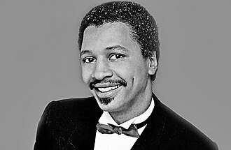

Richard "Dimples" Fields
Richard "Dimples" Fields was an American R&B and soul singer, popular during the 1980s.
Complete Discography & Tracklists (7)
1981 I've Got to Learn to Say No! / She's Got Papers on Me 🎵 2 Tracks
1982 Don't Ever Stop Chasing Your Dreams 🎵 0 Tracks
No tracks registered.